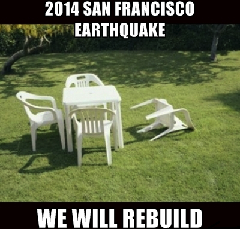

- student: DBC
- mkt mgr + product liaison: TRLA
- timcannady@gmail.com
- twitter.com/tcannadysf
- linked.com/in/timcannady
- github.com/timcannady
HTML/CSS
If it's worth doing, it's worth doing right
This website began as a quick and dirty place to post weekly reflections. It's been a psuedo-practice in designing and managing a hand-coded website, researching technical issues and, finally, teaching them to an audience (which is always helpful).
It was never expected to be a master of anything (UX, UI, style, content, cutting-edge technologies, etc). Rather it was just a 'semi' deep-dive all at once. In other words, it was never meant to be polished.
The site has grown to something more robust and proud, including the addition of a new Projects section. And typical to growth it hasn't come without some pains.
The foundation was somewhat imperfect due to it being one of my first HTML and CSS projects. On one hand I'm proud of not letting the perfectionist drag me down. After all, "if you launch a perfect product, you've waited too long." But on the other hand it required almost a day's work (for a beginner) to retool the site. Perhaps it's a zero-sum game: it could have taken me a day to do correctly from the start seeing that I was a beginner. But now that the site has grown so much (around 25 page files) I had to go back and update each one to match the new template.
Hindsight is 20/20 so I won't be too hard on myself. But I will try to learn from it! Here's some questions I'll ask, followed by some hesitations that I'll probably only quiet with time:
- If it's worth doing, it's worth doing right: but how right?
- Ask myself what the likelihood is that it sticks: but at what point of likeliness does it matter?
- Ask who will use it: if it's not private, will I be ok with other people seeing it?
What's funny is that the changes are probably indiscernible because they had more to do with the structure than the design. All in all it was a valuable experience. I'll be sure to consider those questions the next time I'm building a new site. And I'm also left with some questions that feel a little more 'intermediate' in nature, which is exciting:
- Asynchronous loading: how can I design the site so the sidebar won't refresh on each page change? I've read about AJAX but am not sure if that's the right technology. But I'm starting to see the need for these types of technologies.
- High-tech templates: it took a while to update all the the posts to the new template. I wish there were a technology that was like a CSS for HTML. I have a template for my blog posts where I just copy in the new blog's content. But it would be cool if there were some kind of templating system. Maybe a call to "include.blog.template" at the top of the HTML file. Something to make it easier to replicate, and update, similar pages in a clean and quick manner
"Necessity is the mother of invention"
I initially redesigned the site so zooming didn't cause the divs to overlap (at least within 90%-125% zoom on Chrome). It's cool how much you can learn from such a simple task - both about how to update a site, as well as ideas you get for the future.